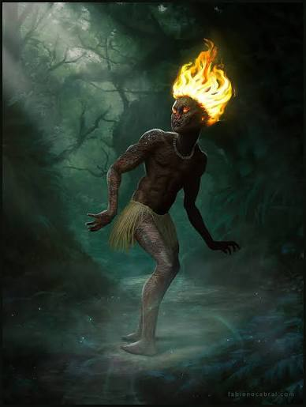

Brasil - Florestas
CURUPIRA
Pés virados para trás. Protege a mata.
Curiosidades
Guardião ancestral: É uma das figuras mais antigas do folclore brasileiro, considerado o protetor implacável das árvores e dos animais contra a caça predatória e a destruição.
Os pés virados para trás: Suas pegadas invertidas servem perfeitamente para confundir caçadores e madeireiros mal-intencionados, fazendo com que sigam a direção errada e se percam na mata.
Antigas oferendas: Há registros de que antigos viajantes e caçadores deixavam pequenos presentes, como tabuleiros de fumo e cachaça, na entrada da floresta para acalmar o Curupira.